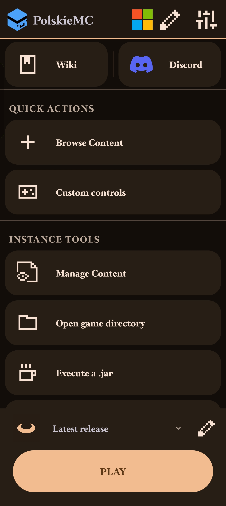
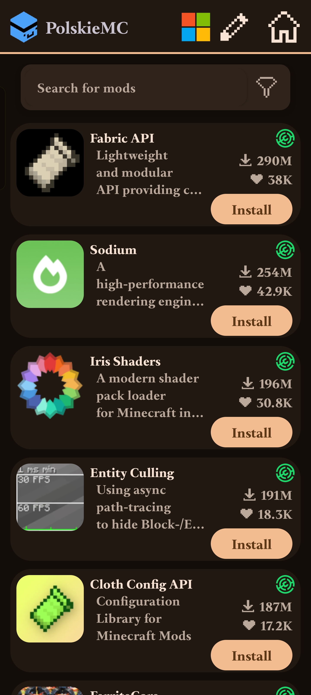
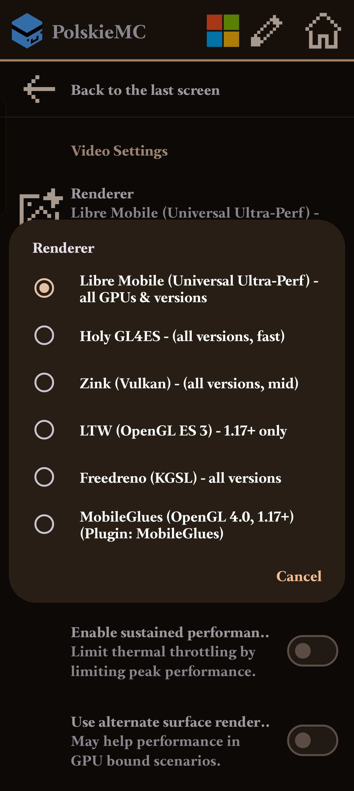
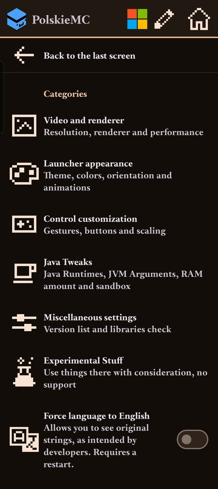
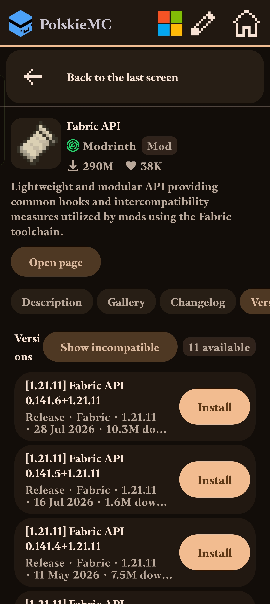
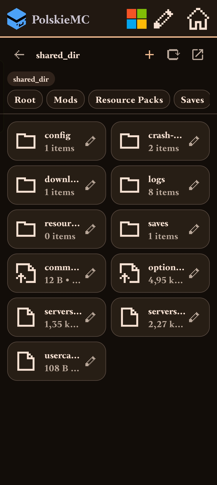

21 MB Dual-Runtime APK
Through aggressive stripped packaging, dead-code elimination, and bytecode trimming, both Java 21 and bleeding-edge Java 25 fit within a clean 21 MB download.
21 MB • Java 21 + 25
Libre Launcher (Android) packs bundled Java 21 & Java 25, the high-throughput LibreMobile Vulkan renderer, native Rust touch controls (<2 ms latency), Adreno Turnip driver manager, and dynamic Material You home-screen widgets into a featherweight 21 MB APK.

Libre Launcher (Android) is an independent, mobile-first Minecraft: Java Edition launcher engineered specifically for Android (arm64-v8a) by PolskieWin. It is not affiliated with, nor derived from, unrelated desktop PC launchers that share the name.
Every byte in Libre Launcher serves a purpose. No bloated webviews, no heavy desktop emulators, and zero unnecessary dependencies.
Through aggressive stripped packaging, dead-code elimination, and bytecode trimming, both Java 21 and bleeding-edge Java 25 fit within a clean 21 MB download.
Zero-overhead Vulkan pipeline and optimized GLES translation directly targeting mobile tiled GPUs. Drastically reduces thermal throttling and frame pacing spikes during heavy rendering.
Sub-2ms input latency via libre_controls built in pure Rust. Bypasses Android UI thread queues for zero ghost touches, instant drag-aiming, gyro steering, and hardware controller mapping.
Built-in hot-swappable Mesa Turnip driver manager tailored for Qualcomm Snapdragon GPUs. Switch between Turnip Vulkan, system proprietary drivers, Freedreno, and Zink in one tap.
Full native Modrinth ecosystem browser for Fabric, Quilt, and NeoForge mods, resource packs, and shaders. Export entire instances and custom control layouts into single-click .librepack archives.
Native 2x1 and 2x2 Android home-screen widgets providing live playtime counters, quick launch for last-played worlds or servers, active driver profiles, and battery drain telemetry.
Explore authentic in-app screenshots of Libre Launcher's Material Design 3 interface, driver selector, and Modrinth ecosystem.

Expand
Expand
Expand
Expand
ExpandSide-by-side technical comparison with legacy Minecraft launchers on Android.
Smaller is better. Lower download time, zero bloatware, and maximum storage savings.
| Feature / Spec | Libre Launcher (Android) | Amethyst Launcher | PojavLauncher | Desktop Fat Forks |
|---|---|---|---|---|
| APK Size Base stripped download footprint | ~21 MB (Stripped) | ~149 MB | ~176 MB | ~259–300 MB |
| Bundled Java Runtimes Pre-integrated runtime execution | Java 21 & Java 25 (Bundled) | Installable in Runtime Tab | Java 17/21 Bundle | Bloated Multi-GB |
| Native Core Engine Touch pipeline & input latency | Rust + C++ JNI (<2 ms) | Standard Java / Kotlin | C / Java Legacy JNI | Heavy Emulated Wrapper |
| Graphics Renderer GPU translation & backend pipeline | LibreMobile Vulkan | MobileGlues / GLES / VirGL | Holy GL4ES / Zink | Legacy GL4ES |
| Home-Screen Widgets Live playtime & instant launch | 2x1 & 2x2 Material You | None | None | None |
| Modrinth & Sharing Mod downloading & profile packs | Modrinth API + .librepack | File Browser + Modrinth | File Browser | Manual File Copy |
| License & Privacy Telemetry and distribution freedom | LGPLv3 • Zero Telemetry | GPLv3 | GPLv3 | Proprietary / Ad-supported |
High-performance native utilities, zero-telemetry engines, and stripped tools built in Rust, C++, and Kotlin.
21 MB stripped Minecraft: Java Edition launcher for Android. Features bundled Java 21 & 25, LibreMobile Vulkan renderer, native Rust controls, and Turnip driver manager.
View RepositoryTiny, zero-tracker CarPlay & automotive dashboard for Android 14+ in Rust. Includes offline 3D maps, fuel track optimizer, media player, and EN/PL voice commands.
View Repository100% native Android Canvas GUI chess app and sub-15MB Axum/Tokio Rust matchmaking server with Shakmaty move validation and zero analytics.
View RepositoryUltra-fast, zero-downscale local network file and message drop engine in Rust & Kotlin. Encrypted peer-to-peer transfers with zero reliance on cloud servers.
View RepositoryLightweight, open-source Windows 10 & 11 optimization and debloating framework removing background telemetry, Recall AI, and latency bottlenecks.
View RepositoryLightweight, client-side Minecraft mod crash report and bytecode analyzer. Pinpoints conflicting Mixins, missing dependencies, and OpenGL driver failures without cloud logs.
View Repository